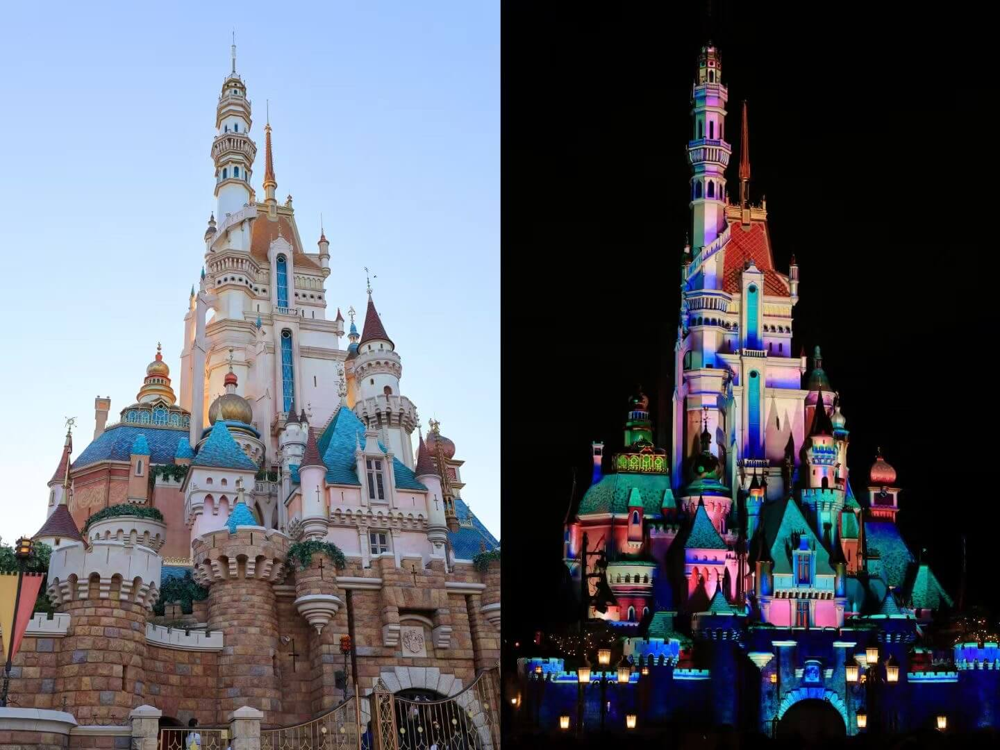
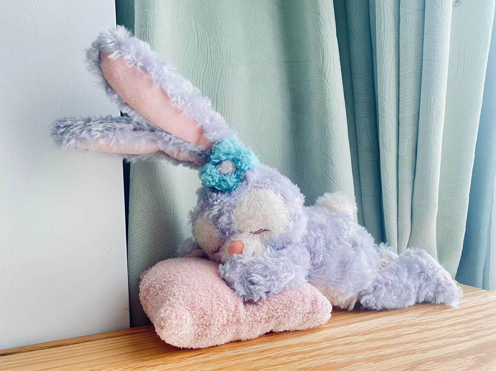
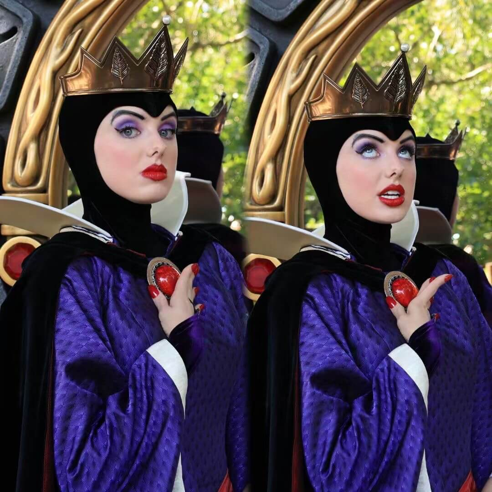

香港迪士尼一日游

国庆期间和女朋友一起去了一趟香港的迪士尼，还蛮好玩的，记录一下当时的行程和体验，或许后面可以给自己参考。
出行
我们是从深圳出发，买了 深圳北 到 香港西九龙 早上 8:23 左右的高铁，去到西九龙之后，还需要换乘三趟地铁。
西九龙边上就是 柯士甸 站，柯士甸站坐到 南昌 站，再到 欣澳 ，从欣澳乘坐迪士尼线，就到迪士尼的入口了。
上午出发的有点晚，去到深圳北已经八点多了，还好从地铁口出来马上就是高铁候车大厅，人也不多，顺利赶上了高铁。
去到迪士尼的时候已经接近十点了，没等多久，迪士尼就开放入园了。 入香港海关也很快，没什么阻碍。
回来的时候也是从西九龙坐高铁回，10:23 左右的高铁，看完了迪士尼的烟花大概是 9:20 左右，一路跑着赶地铁，总算是赶上了高铁。
出关的路有点长，刷了三四次证件，花了十来分钟。
乘坐迪士尼线，如果你留意广播会发现，在进入迪士尼的时候的广播是：
Disneyland Resort Station. Have a magical day!
我哋即将带你进入香港迪士尼乐园嘅奇妙世界。
而离开的时候广播是：
We now bring you back to the modern city of Hong Kong.
我哋即将带你返去现代化嘅香港。
Sunny Bay. The futuristic gateway to the Tung Chung Line and modern Hong Kong.
欣澳，乘客可以喺呢个充满时代感嘅车站转乘东涌线。
门票 & 吃喝
香港迪士尼的门票分几个级别，不同级别的票，对入园的日期有限制 (门票级别日历)。
我们买的是第四等票，人均 750 左右，基本上所有日期都能入场。
入园有检查，需要打开包检查里面的东西，不太确定携带干粮，饮料有没有限制，因为我们没有带。
水的话在洗手间附近有免费的饮用水，可以带杯子去接水喝。
吃饭可以在迪士尼的餐厅吃，不同区域有不同的餐厅，里面的菜式也是不同的。
午饭我们在冰雪奇缘边上的餐厅点了两个套餐，大概是 480 港币。
因为在美团上买了三合一餐券，午餐晚餐可以各抵扣 160 港币，另外还需要补 140 港币的差价。
餐厅的点餐流程是先占位，然后点餐，接着拿着餐点去收银台结账。
点的是炖羊腿和鸡排，里面有一些土豆泥，小土豆，西兰花，小番茄和一瓶饮料，我觉得味道还不错，也能吃饱，就是相对而言偏贵。
晚餐是在彗星餐厅吃的，这里有咖喱猪排饭，滑蛋肥牛饭，价格都低于 160，用餐券后就不需要再补差价了。
餐券是 230 多人民币，抵扣了 320 港币，大概会帮你节省 50 块钱左右。
门票以及吃喝加起来，人均大概是 1000 人民币左右。
购物
基本每一个项目结束之后，你都能碰到一个相关主题的商店。
刚入园可以先尽情的玩，到最后再去购物就好了。
买了一个趴着睡的 Stella，还蛮可爱的。

拍照
很多人会拍城堡照，本来想着先去玩，等玩累了再慢慢拍照。
但到了下午，人和城堡就背光了 (╥_╥)
另外晚上光线很暗，最好有闪光灯。

玩耍
香港迪士尼有一个 App，App 上有迪士尼的地图，可以看到当前定位、各个项目的等待时间、洗手间、餐厅等位置，以及一些演出的时间。
我们没有做太多的攻略，就大概看了看什么项目评价比较高，就去玩玩，基本就绕着园区走一圈，看看哪里排队时间短就去玩玩。
- 魔雪奇幻之旅
冰雪奇缘主题的一个项目，坐着船在里面飘，场景中的人物塑造得很逼真，和电影里看到的很接近。
当艾莎唱起那首 Let It Go，还是挺有电影中的感觉的。
- 雪岭滑雪橇
在魔雪奇幻之旅隔壁，是一个时间比较短的过山车，刺激程度还行。
但是排队时间久，游玩时间短，性价比较低。
- 米奇幻想曲
戴着 3D 眼镜坐在剧院里欣赏的 4D 影片，音效和视觉效果很棒，会刮风喷水，让你身临其境。
影片贯穿很多部迪士尼动画电影，能看到很多经典的角色。
- 冲天遥控车
玩具总动员主题的项目，在一个 U 字行的轨道上来回摆动，失重感比较明显，好玩。
这个区域颜色很鲜明，拍照蛮好看的。
- 迷离大宅
坐着复古造型的车在大宅里观赏，据说是一个收藏家的宅第，里面有一个充满魔力的音乐盒。
打开音乐盒后，音乐盒的魔力在大宅里游走，让原本静态的收藏品复活起来。
像是《美女与野兽》中会动的餐具的感觉，有种梦幻感。
我和女朋友坐在前排，后面还有一个人，中间经过一面大镜子的时候，忘了后面有个人，突然从镜子里看到背后有个人，还以为是什么场景效果。
- 灰熊山极速矿车
- 一个刺激好玩的过山车，推荐。
- 恶人大宅舞会
一场 30 分钟的演出，里面都是一些“恶人”，不过都不认识。
舞台效果很好，像是迪士尼电影里那种真人歌舞的场景。
开场的时候，女朋友还被点名上去当魔术师的工具人，也是一次意外的体验。
- 森林漂流之旅
- 坐着一艘船，环绕丛林区域一圈，船长会用他的口才给你解说一段三天两页的旅程，很适合喜欢冒险的小朋友。
- 星战极速穿梭
- 很刺激的过山车，在一片漆黑中转来转去，因为看不见，真的很担心会不会碰到什么(ﾉヽ)。
- 铁甲奇侠飞行之旅
模拟坐在一辆铁甲中，和钢铁侠一起拯救 Stark 大厦。也是戴着 3D 眼镜的 4D 体验。
如果看电影都是这种规格的体验就好了。
- 蚁侠与黄蜂女
- 比较无聊的一个项目，两个人坐在一辆轨道车里，拿着激光枪对着一些靶点涉及，过程比较缓慢。
- 小小世界
坐在船里，经过不同区域的场景，展现世界不同文化的特色。
场景比较幼儿化，一路播放着《世界真细小》这首童歌。
因为晚上才去，人比较少，里面显得比较空旷，两边又尽是些人偶，有一点《红辣椒》里那段游行剧情一般的怪异感。
- 烟花
在视频里看烟花，和实际看烟花感受还是很不一样。
现场看到的烟花很亮，有的白色烟花就像是在空中放了一个照明弹。
橙黄色的烟花拖着火星在后面划出一条弧线，然后渐渐消失，转瞬即逝的美。
最后的烟花是最精彩的，如果看的话记得看完。
总的来说体验还是不错的，有时间可以再去玩玩。